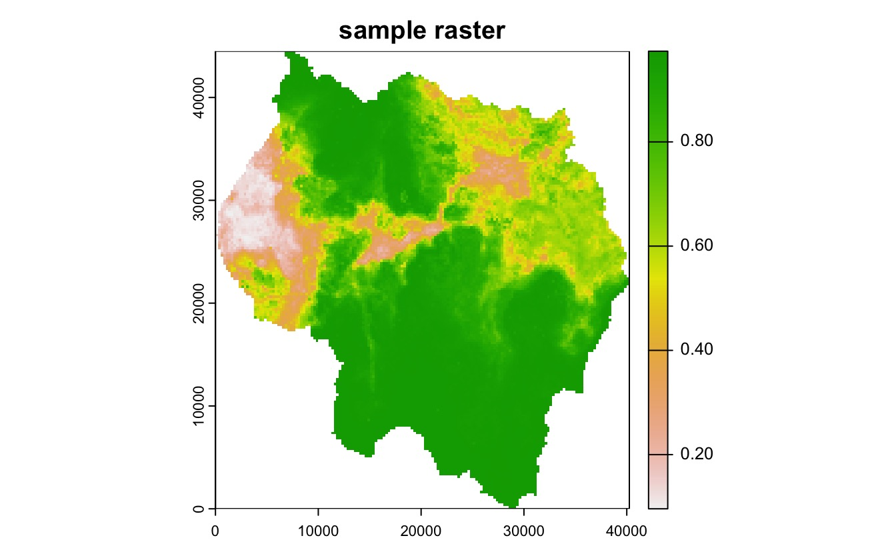
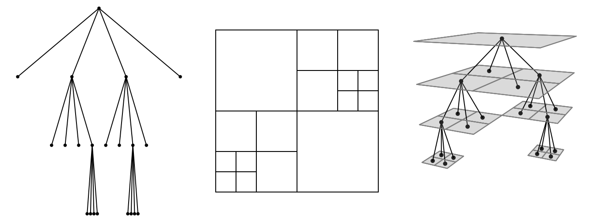
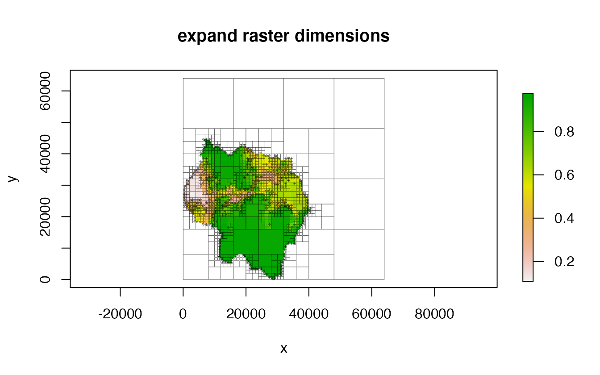
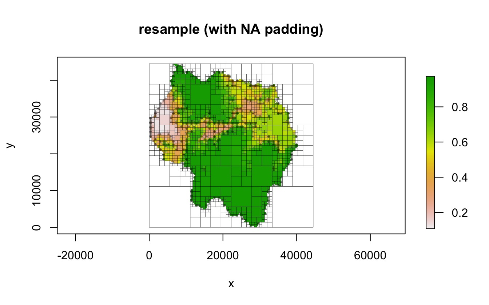
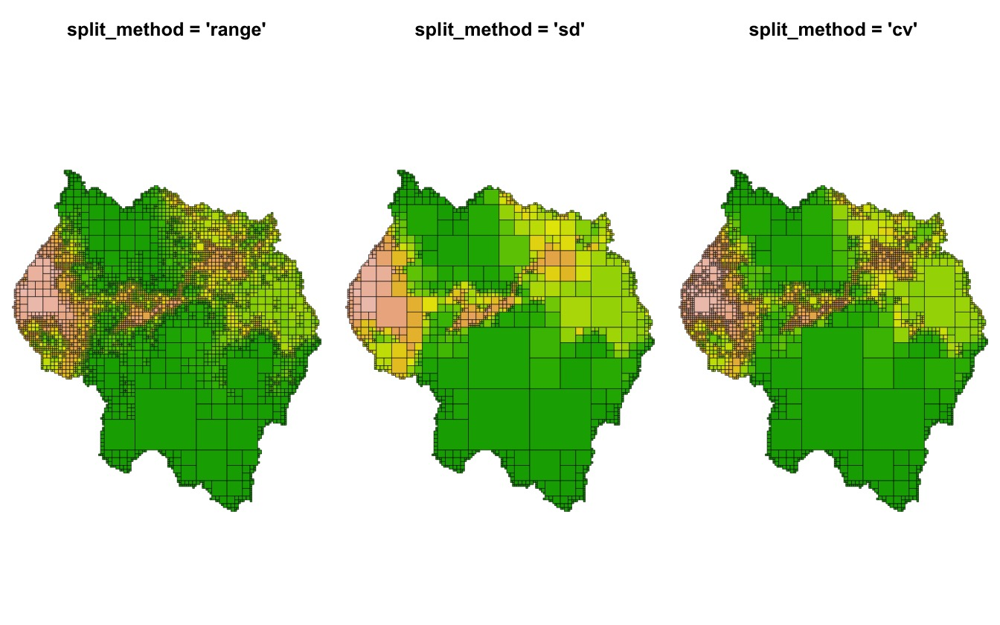
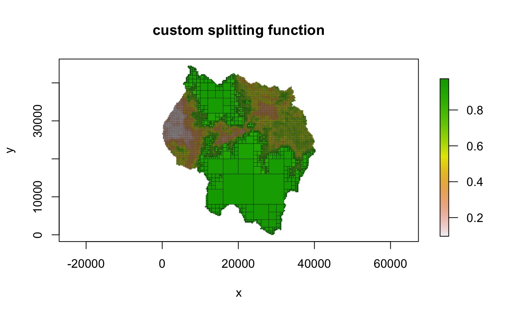
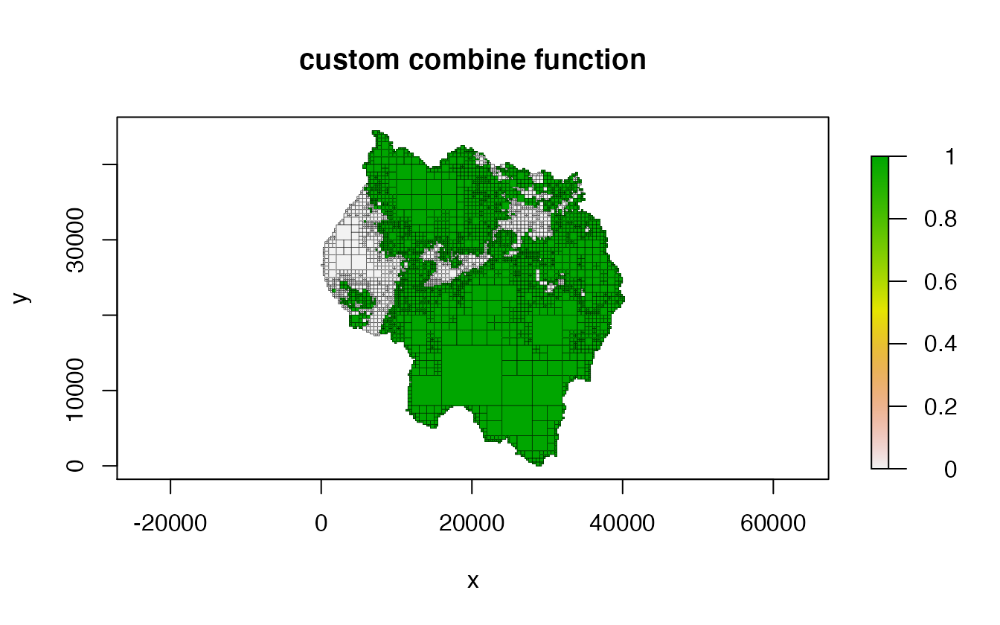
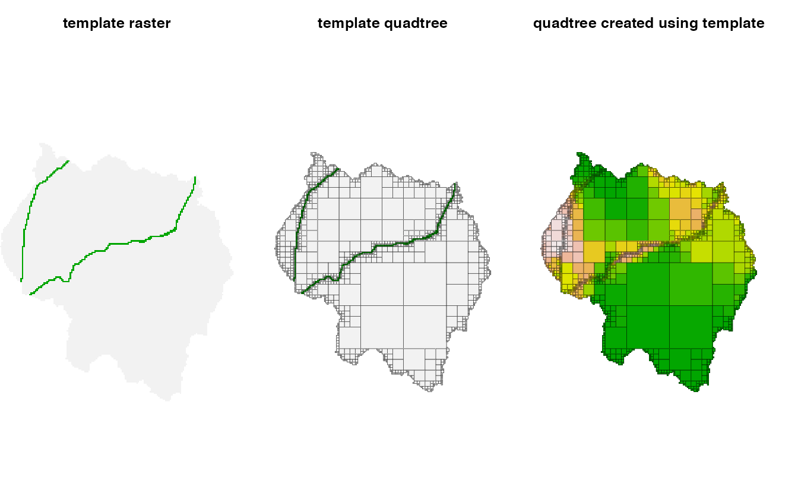
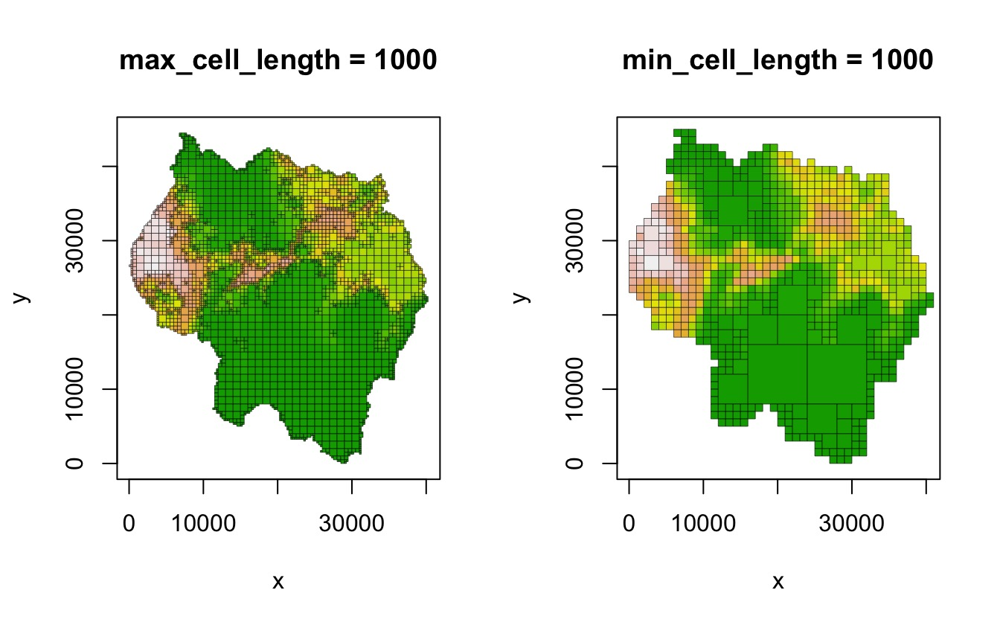
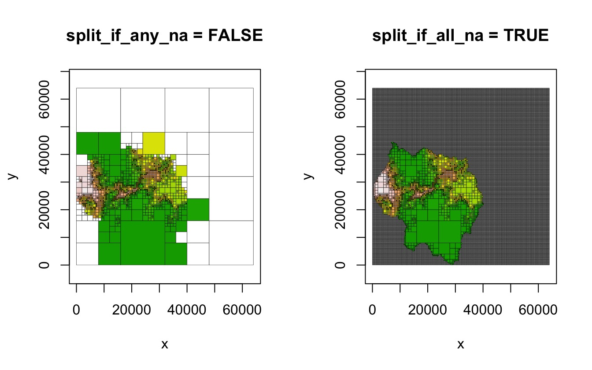

Creating Quadtrees
Derek Friend
Last compiled on May 24, 2023
Source:vignettes/quadtree-creation.Rmd
quadtree-creation.RmdVignette content
This vignette goes over the process of creating a quadtree and covers all of the various parameter settings that can be used to modify the way a quadtree is created. Note that all the examples use the following example raster:
library(quadtree)
library(terra)
habitat <- terra::rast(system.file("extdata", "habitat.tif", package="quadtree"))
rast <- habitat
plot(rast, main = "sample raster")
Overview of the quadtree data structure
Quadtrees are tree data structures where each node is allowed to have either zero or four children. This data structure can be used to represent two-dimensional space by interpreting each node as a rectangular cell. The root of the tree represents a single cell that encompasses the entire area. If a node has children, they represent the four cells created when the node is divided into quadrants. This creates a hierarchical data structure where any given point in space is contained within many different cells at different levels. In order to represent the value of some variable across space, each node has a value that represents the value of that variable in the region covered by the node. This means that any point may be associated with multiple values - this can be useful in some situations. However, it may also be desirable for each point to be associated with only a single value. The terminal nodes can be treated as the only value for any given point, and the values at the higher levels can essentially be ignored. This creates a space-exhausting surface like a raster where every point in space has a single value. Unlike a raster, however, the hierarchical nature of a quadtree easily facilitates variable-sized cells. When a quadtree is used in this fashion it is referred to as a region quadtree.
This feature of quadtrees make them advantageous in certain situations. In some applications it may be critical for the data structure to have a fine resolution in certain areas, while other areas may be suitably represented by large cells. For example, quadtrees have been used for image compression - by allowing largely homogeneous areas of an image to be represented by large cells, the amount of data needed to represent the image can be greatly reduced while still preserving fine resolution in heterogeneous areas.
The following figure shows a quadtree data structure (left), it’s spatial representation (middle), and a 3D plot showing how the data structure and the spatial representation correspond (right).

Overview of quadtree creation
In the quadtree package, a quadtree is created from a
raster or a matrix by successively dividing the raster/matrix into
smaller and smaller cells, with the decision on whether to divide a
quadrant determined by a function that checks the cell values within
each quadrant and returns TRUE if it should be split, and
FALSE otherwise. Initially, all of the cells in the raster
are considered. If the cell values meet the condition determined by the
splitting function, the raster is divided into four quadrants -
otherwise, the raster is not divided further and the value of this
larger cell is calculated by applying a ‘combine function’ that
aggregates the cell values into a single value (for example, mean or
median). If a quadrant is split, the process is repeated for each of
those ‘child’ quadrants, and then for their children, and so on and so
forth, until either the split function returns FALSE or the
smallest possible cell size (as determined by the input raster) has been
reached.
Pre-creation dimension adjustment
If a given quadrant has dimensions that are not divisible by two (for
example, 5 x 5), then the process stops. Because of this, only rasters
that have dimensions that are a power of two can be divided down to
their smallest cell size. In addition, only square rasters can be
divided down to their smallest cell size. To create quadtrees from
rasters that have dimensions that are not a power of two and are not
square, two options are provided. The choice of method is determined by
the adj_type parameter.
The "expand" method
In the "expand" method, NA cells are added
to the raster in order to create an expanded raster whose dimensions are
a power of two. The smallest number that is a power of two but greater
than the larger dimension is used as the dimensions of the expanded
raster. In the following example, the raster has dimensions of 178 x
161. To make it suitable for quadtree creation, NA rows and
columns are added in order to create a raster with dimensions 256 x 256
(as 256 is the smallest power of two that is also greater than 178), and
then the quadtree is created from that raster.
dim(rast) # not a power of 2
#> [1] 178 161 1
qt <- quadtree(rast, .15, adj_type = "expand")
plot(qt, border_lwd = .3, main = "expand raster dimensions")
The "resample" method
In the "resample" method, the raster is resampled in
order to create a square raster with dimensions that are a power of two.
If the data does not have the same number of rows and columns,
resampling the raster to have an equal number of rows and column will
result in rectangular but non-square cells. This resampled raster is
then used to create the quadtree.
qt <- quadtree(rast, .15, adj_type = "resample", resample_n_side = 128,
resample_pad_nas = FALSE)
plot(qt, border_lwd = .3, main = "resample (without NA padding)")
If square cells are desired, an additional step is added to make the
raster square by setting resample_pad_nas to be
TRUE (the default). This is done in a way similar to the
method described above. The smaller dimension is padded with
NA cells in order to equal the larger dimension. As stated
previously, our sample raster has dimensions 178 x 161, so
NA columns are added in order to create a raster with
dimensions 178 x 178. Then, the raster is resampled to a user-specified
dimension (determined by the resample_n_side parameter).
For example, the user could set resample_n_side to be 128,
which will resample the 178 x 178 raster to 128 x 128. This raster can
then be used to create a quadtree.
qt <- quadtree(rast, .15, adj_type = "resample", resample_n_side = 128)
plot(qt, border_lwd = .3, main = "resample (with NA padding)")
Splitting and aggregating functions
The method used to determine whether or not to split a cell as well as the method used to aggregate cell values can be defined by the user. Simple methods are already provided, but custom functions can be defined.
Default methods
Splitting functions
Three methods are provided for splitting a quadrant. The
"range" method calculates the difference between the
minimum and maximum values within the quadrant, "sd"
calculates the standard deviation of the values, and "cv"
calculates the coefficient of variation. Regardless of which method is
used, the resulting value is compared to the
split_threshold parameter, and if it exceeds the threshold,
the quadrant is split.
qt_range <- quadtree(rast, .1, split_method = "range")
qt_sd <- quadtree(rast, .1, split_method = "sd")
qt_cv <- quadtree(rast, .1, split_method = "cv")
par(mfrow = c(1, 3), mar = c(0,0,3,0))
plot(qt_range, crop = TRUE, na_col = NULL, zlim = c(0, 1), border_lwd = .3,
axes = FALSE, legend = FALSE, main = "split_method = 'range'")
plot(qt_sd, crop = TRUE, na_col = NULL, zlim = c(0,1), border_lwd = .3,
axes = FALSE, legend = FALSE, main = "split_method = 'sd'")
plot(qt_cv, crop = TRUE, na_col = NULL, zlim = c(0,1), border_lwd = .3,
axes = FALSE, legend = FALSE, main = "split_method = 'cv'")
Combine functions
Four methods to aggregate cell values are provided -
"mean", "median", "min", and
"max" - the names are self-explanatory. Note that in the
following example the structures of the quadtrees are identical - the
combine function has no influence on the decision to split a cell.
qt_mean <- quadtree(rast, .1, "sd", combine_method = "mean")
qt_median <- quadtree(rast, .1, "sd", combine_method = "median")
qt_min <- quadtree(rast, .1, "sd", combine_method = "min")
qt_max <- quadtree(rast, .1, "sd", combine_method = "max")
par(mfrow = c(2, 2), mar = c(.5, .5, .5, .5))
plot(qt_mean, crop = TRUE, na_col = NULL, axes = FALSE, legend = TRUE,
border_lwd = .3, zlim = c(0,1), main = "mean")
plot(qt_median, crop = TRUE, na_col = NULL, axes = FALSE, legend = TRUE,
border_lwd = .3, zlim = c(0,1), main = "median")
plot(qt_min, crop = TRUE, na_col = NULL, axes = FALSE, legend = TRUE,
border_lwd = .3, zlim = c(0,1), main = "min")
plot(qt_max, crop = TRUE, na_col = NULL, axes = FALSE, legend = TRUE,
border_lwd = .3, zlim = c(0,1), main = "max")
Custom methods
Splitting functions
Custom functions can be written to apply more complex rules to
splitting and combining. These functions must take two parameters:
vals and args. vals is a numeric
vector of the values of the cells within the current quadrant.
args is a named list that contains the arguments needed by
the custom function. Any parameters needed for the function should be
accessed through args. Note that even if no extra
parameters are needed, the custom function still needs to take an
args parameter - in that case it just won’t be used by the
function.
split_fun must return a boolean, where TRUE
indicates that the quadrant should be split. An important note to make
is that any custom function must be able to handle NA
values. The function must always return either TRUE or
FALSE - if NA is ever returned an error will
occur.
For example, a simple splitting function that splits a quadrant when any of the values are below a given limit could be defined as follows:
We can then use this with the quadtree() function to
apply the splitting method. Note that because the function makes use of
an element of args named threshold, the
split_args parameter needs to contain an element called
threshold:
qt <- quadtree(rast, split_method = "custom", split_fun = split_fun,
split_args = list(threshold = .8))
plot(qt, crop = TRUE, na_col = NULL, border_lwd = .3,
main = "custom splitting function")
Combine functions
As with split_fun, combine_fun must take
two arguments named vals and args. Custom
combine functions must return a single numeric value, and unlike
split_fun, combine_fun is allowed to return
NA values. For example, the following function can be used
to create a binary quadtree which only takes on the values 0 and 1,
based on some cutoff threshold.
cmb_fun <- function(vals, args) {
if (any(is.na(vals))) {
return(NA)
}
if (mean(vals) < args$threshold) {
return(0)
} else {
return(1)
}
}
qt <- quadtree(rast, .1, combine_method = "custom", combine_fun = cmb_fun,
combine_args = list(threshold = .5))
plot(qt, crop = TRUE, na_col = NULL, border_lwd = .3,
main = "custom combine function")
Creating a quadtree using a template
The quadtree() function also allows users to create a
quadtree using another quadtree as a “template” (via the
template_quadtree parameter). The structure of the new
quadtree will be identical to that of the template quadtree, but the
values of the cells will be derived from the raster used to create the
new quadtree. This allows for a raster to be converted into a quadtree,
with the structure of the quadtree being determined by a different
raster. The rasters used to make the template quadtree and the new
quadtree should have the exact same extent and dimensions - in addition
the exact same expansion method (i.e. the method specified by
adj_type) should be used to create both quadtrees.
In the following example, a raster representing the presence/absence of roads is used to create a quadtree, and then that quadtree is used as a template to create a quadtree from a different raster.
habitat_roads <- terra::rast(system.file("extdata", "habitat_roads.tif", package="quadtree"))
template <- habitat_roads
# use a custom function so that a quadrant is split if it contains any 1's
split_if_one <- function(vals, args) {
if(any(vals == 1, na.rm = TRUE)) return(TRUE)
return(FALSE)
}
qt_template <- quadtree(template, split_method = "custom",
split_fun = split_if_one)
# now use the template to create a quadtree from 'rast'
qt <- quadtree(rast, template_quadtree = qt_template)
par(mfrow = c(1, 3), mar = c(0,0,3,0))
plot(template, axes = FALSE, box = FALSE, legend = FALSE,
main = "template raster")
plot(qt_template, crop = TRUE, na_col = NULL, border_lwd = .3 ,axes = FALSE,
legend = FALSE, main = "template quadtree")
plot(qt, crop = TRUE, na_col = NULL, border_lwd = .3, axes = FALSE,
legend = FALSE, main = "quadtree created using template")
Other parameters
max_cell_length and min_cell_length
The max_cell_length and min_cell_length
parameters let the user specify the range of allowable cell sizes. If
max_cell_length is not NULL, then the maximum
cell size in the resulting quadtree will be
max_cell_length. This essentially forces any quadrants
larger than max_cell_length to split. The one exception is
that a quadrant that contains entirely NA values will not
be split. Similarly, the min_cell_length parameter can be
used to define a minimum side length for all cells, such that a quadrant
cannot be split if its children would be smaller than
min_cell_length.
qt_max_cell <- quadtree(rast, .15, max_cell_length = 1000)
qt_min_cell <- quadtree(rast, .15, min_cell_length = 1000)
par(mfrow = c(1, 2))
plot(qt_max_cell, crop = TRUE, na_col = NULL, border_lwd = .3, legend = FALSE,
main = "max_cell_length = 1000")
plot(qt_min_cell, crop = TRUE, na_col = NULL, border_lwd = .3, legend = FALSE,
main = "min_cell_length = 1000")
split_if_any_na and split_if_all_na
The split_if_any_na and split_if_all_na
parameters control how NA values are handled. If
split_if_any_na is TRUE (the default), a
quadrant will be split if any of the values are NA. This
ensures that rasters with irregular shapes maintain their shape in the
resulting quadtree representation. If FALSE, quadrants with
NAs are not automatically split - note that this can
produce unexpected results if the raster is irregularly shaped (see the
example below). split_if_all_na controls what happens when
a quadrant consists entirely of NA values. If
FALSE (the default), these quadrants are not split. If
TRUE, these quadrants are automatically split, which
results in quadrants with all NA values being split to the
smallest possible cell size.
qt_any <- quadtree(rast, .15, split_if_any_na = FALSE)
qt_all <- quadtree(rast, .15, split_if_all_na = TRUE)
par(mfrow = c(1, 2))
plot(qt_any, border_lwd = .3, legend = FALSE, main = "split_if_any_na = FALSE")
plot(qt_all, border_lwd = .3, legend = FALSE, main = "split_if_all_na = TRUE")